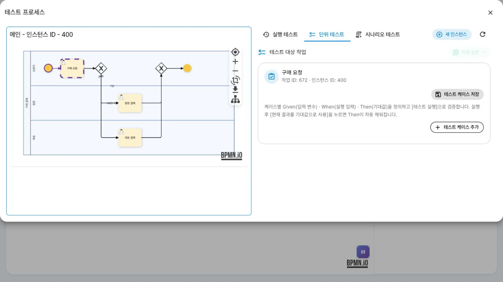
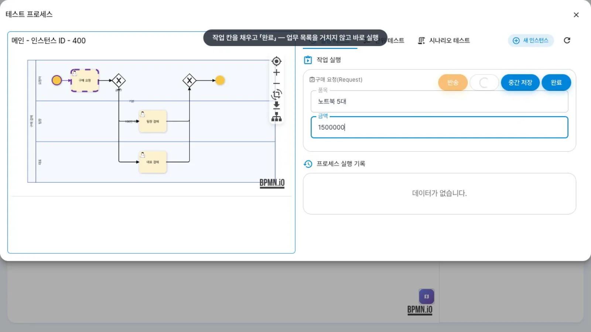
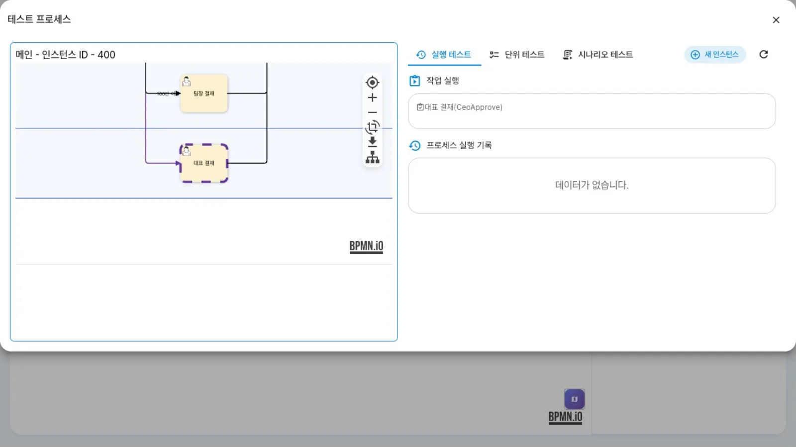
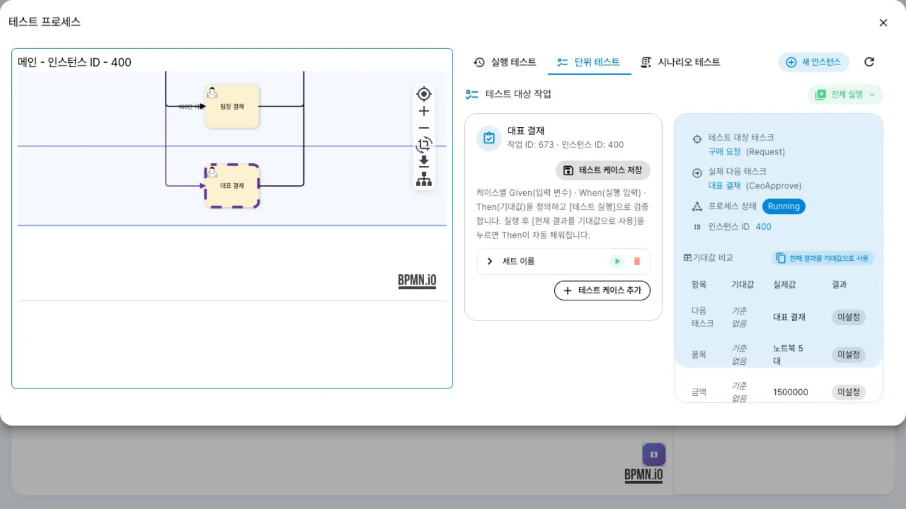

정의 화면의 시뮬레이션(벌레 아이콘)으로 「테스트 프로세스」를 열어, 업무 목록을 거치지 않고 작업을 차례로 실행해 봅니다. 실행 결과를 「단위 테스트」의 기대값과 비교하고 테스트 케이스를 작성합니다. 「시나리오 테스트」는 이 브랜치에서 준비 중입니다.
무엇을 · 왜#
정의를 고친 뒤 실제 사람에게 작업을 보내기 전에 분기·매핑이 의도대로 동작하는지 먼저 확인합니다. uEngine6 모델러의 시뮬레이션은 그 정의로 시뮬레이션 인스턴스(simulation: true)를 만들어 한 화면에서 작업을 하나씩 완료할 수 있게 합니다.
| 탭 | 하는 일 | 이 브랜치 |
|---|---|---|
| 「실행 테스트」 | 현재 작업의 입력 칸을 채우고 「완료」 → 다음 작업으로. 반송·SKIP·중간 저장도 같은 화면에서 실행 | ✅ |
| 「단위 테스트」 | 작업마다 케이스(Given 입력 변수 · When 실행 입력 · Then 기대 다음 태스크·변수)를 쓰고 「테스트 실행」. 마지막 실행 결과를 기대값과 비교 | ◐ 작성·비교까지 이 장에서 확인. 저장하면 definitions/unitTests/<정의>.unit 파일이 생김 |
| 「시나리오 테스트」 | 여러 작업을 잇는 시나리오 | ✗ 「시나리오 테스트 준비 중입니다」 |
알아 둘 내용은 다음과 같습니다.
- 시뮬레이션은 저장된 작업본(
definitions/<정의>.bpmn)으로 실행됩니다. 실제 인스턴스가 쓰는 archive 버전 파일과 다를 수 있습니다(버전과 배포). - 시뮬레이션 인스턴스도 실제 인스턴스입니다. 관리자 목록·업무 목록에 남으므로 시험이 끝나면 지웁니다.
- 첫 레인(시작하는 사람)에 배분 설정이 있으면 시뮬레이션도 화면의 「실행」처럼 500 오류로 열리지 않습니다. 첫 레인은 비워 둡니다(레인과 담당자).
이 장의 정의 튜토리얼/시험/구매결재의 흐름은 다음과 같습니다: 구매 요청(품목·금액) → 게이트웨이 「금액?」 → 100만 이상이면 대표 결재(김대표), 아니면 팀장 결재(윤팀장).
따라 하기#
- 정의 열기. 홍길동(
hong)으로튜토리얼/시험/구매결재를 엽니다(읽기 모드). 오른쪽 위 아이콘 줄의 벌레+재생 아이콘이 시뮬레이션입니다. - 「테스트 프로세스」. 벌레 아이콘을 누르면 약 10초 후 「테스트 프로세스」 창이 뜹니다. 왼쪽은 「메인 - 인스턴스 ID -
」 그림, 오른쪽은 탭 「실행 테스트」「단위 테스트」「시나리오 테스트」와 「새 인스턴스」입니다. 이때 시뮬레이션 인스턴스가 하나 만들어집니다. 
테스트 프로세스 - 「실행 테스트」. 「작업 실행」에 현재 작업 「구매 요청(Request)」과 그 입력 칸이 나옵니다. 품목
노트북 5대, 금액1500000을 넣고 「완료」를 누릅니다.
실행 테스트 입력 - 다음 작업 확인. 금액이 100만 이상이므로 그림에서 「대표 결재」가 점선(현재 작업)이 되고, 「작업 실행」도 「대표 결재(CeoApprove)」로 바뀝니다. 같은 화면에서 계속 「완료」하면 끝까지 진행합니다.

대표 결재로 간 시뮬레이션 - 「단위 테스트」 — 실행 결과 비교. 「단위 테스트」 탭 오른쪽 「실행 결과」에 방금 실행한 결과가 표시됩니다. 테스트 대상 태스크 「구매 요청」, 실제 다음 태스크 「대표 결재」, 「기대값 비교」 표(다음 태스크·품목·금액의 기대값과 실제값)입니다. 「현재 결과를 기대값으로 사용」을 누르면 이 실제값이 케이스의 Then에 입력됩니다.

실행 결과와 기대값 비교 - 케이스 쓰기. 「테스트 케이스 추가」를 누르면 「세트 이름」 줄이 생깁니다. 펼치면 Given(입력 변수 — 「변수 추가」로 선택), When(그 작업의 입력 칸), Then(「기대 다음 태스크」와 기대 변수)이 있습니다. 줄 오른쪽의 ▶가 「테스트 실행」, 휴지통이 삭제입니다. 「테스트 실행」은 새 시뮬레이션 인스턴스를 만들어 Given을 넣고 해당 작업까지 진행한 뒤 When으로 완료하고, 결과를 비교한 다음 그 인스턴스를 지웁니다(프런트엔드 코드
runIsolated). - 저장하지 않고 닫기. 「테스트 케이스 저장」을 누르면 케이스가
definitions/unitTests/<정의 경로>.unit에 저장됩니다. 이 튜토리얼에서는 정의 폴더를 정리된 상태로 유지하려고 저장하지 않았습니다. 창을 닫은 뒤 시뮬레이션 인스턴스를 지웁니다.
설정 레퍼런스#
시뮬레이션이 호출하는 API#
| 동작 | 호출 |
|---|---|
| 시뮬레이션 인스턴스 시작 | POST /instance 본문 {"processDefinitionId": "<정의>", "simulation": true} |
| 현재 작업 | GET /instance/<ID>/running(findCurrentWorkItemByInstId) |
| 작업 완료 | 업무 화면과 같은 완료 호출(시뮬레이션 표시를 붙여 보냄) |
| 변수 넣기(Given) | POST /instance/<ID>/variable/<이름> |
| 케이스 저장 | definition-service에 unitTests/<정의>.unit 파일로 |
| 시험 인스턴스 정리 | DELETE 인스턴스(「테스트 실행」은 끝나면 자동으로 삭제) |
케이스 파일의 구조#
케이스는 작업(tracingTag)마다 묶입니다. 각 케이스는 이름, Given 변숫값, When 입력값, Then의 기대 다음 태스크(nextActivityId)와 기대 변수로 이루어집니다. 화면이 쓰는 JSON 그대로 저장되므로, 저장한 파일을 저장소에 넣어 두면 다른 사람도 같은 케이스로 「전체 실행」할 수 있습니다(이 장에서 저장 파일을 만들어 보지는 않았습니다).
시험이 끝난 뒤 정리#
-- 시뮬레이션 인스턴스 확인(로컬 DB)
select inst_id, name, status from bpm_procinst where def_id = '튜토리얼/시험/구매결재';
화면에서는 관리자 목록에서 찾아 지우고, 로컬 시연 스택에서는 정의 접두어로 지우는 스크립트(BPM_DEF_PREFIX='튜토리얼/시험/' node scripts/reset-bpm.mjs, ERP 예제 저장소)를 썼습니다.
알려진 제약#
- 「시나리오 테스트」는 준비 중입니다(게이트웨이에
/scenarios/**라우트도 없습니다). - 시뮬레이션 인스턴스는 지우기 전까지 관리자 목록과 담당자 업무 목록에 남습니다. 담당자가 실제 사람이면 그 사람의 업무 목록에 시험 작업이 보이니, 시험은 끝나는 즉시 정리하세요.
- 시뮬레이션 인스턴스의 시작자는 엔진의 정적 필드에서 읽습니다(BPMN 지원 범위의 시작 레인 항목). 이 장을 녹화할 때 다른 연동 계정(
bpm-bridge)이 동시에 API를 호출하고 있어서 첫 작업 「구매 요청」의 담당자가 홍길동이 아니라bpm-bridge로 기록됐습니다. 「실행 테스트」 화면에서는 그대로 완료되지만, 담당자 기록을 믿지 마세요. - 「실행 테스트」의 「중간 저장」은 업무 목록과 같이 다시 열면 칸이 비어 있습니다.
확인 문제#
정의를 2.0으로 배포하기 전에 시뮬레이션을 돌리면 어느 그림으로 실행되나요?
작업본(definitions/…bpmn)입니다. 실제 인스턴스는 archive의 가장 큰 버전 파일로 시작하므로, 시험이 끝나면 그 내용을 버전 파일로 올려 배포합니다.
「100만 이상이면 대표 결재」를 케이스로 남기려면 Then에 무엇을 쓰나요?
대상 작업 「구매 요청」, When 금액 1500000, Then 「기대 다음 태스크」 = 「대표 결재」입니다. 실행 테스트로 한 번 실행한 뒤 「현재 결과를 기대값으로 사용」을 누르면 같은 값이 채워집니다.